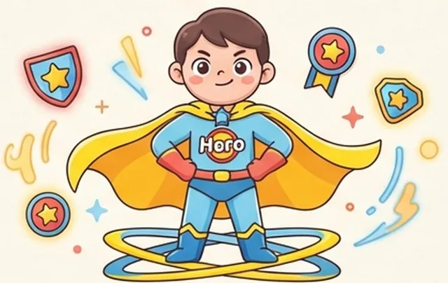
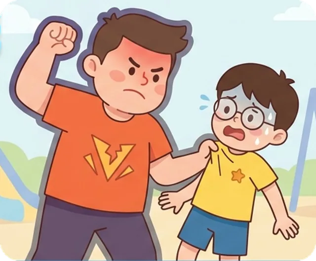
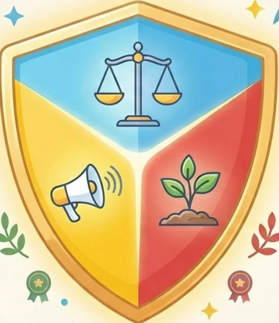
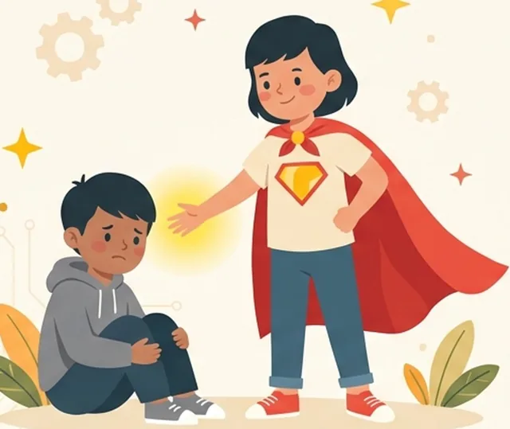
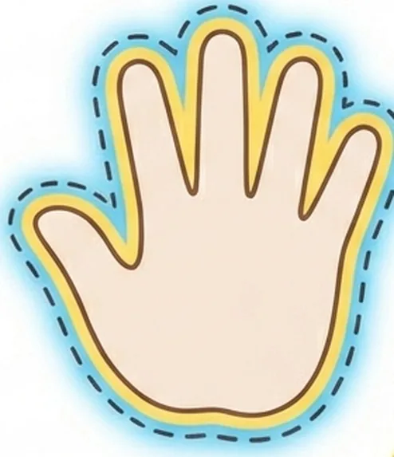
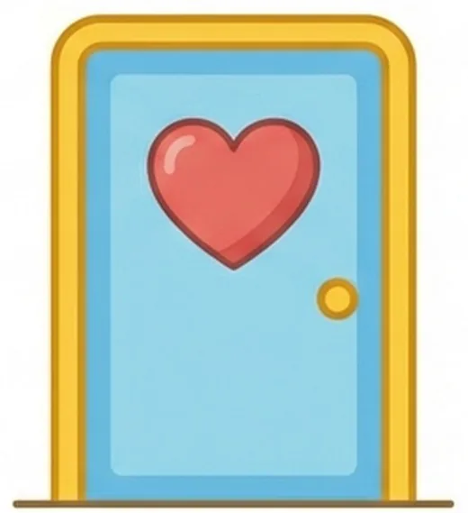
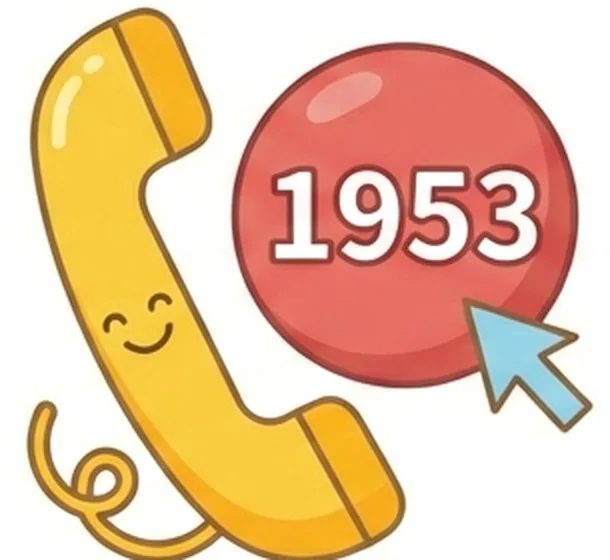

歡迎加入「反霸凌小天使」特訓班！今天要認識霸凌、知道霸凌會傷害兒童權利，並學會保護自己和幫助別人。
公埔國小 生教訓育組長 張奕軒老師


點一下每個問號，組合出霸凌的公式：
霸凌會偽裝成不同的樣子。點一下卡片，揭開它的真面目！
這樣做對嗎？想一想，再點卡片翻面看正確觀念。
霸凌傷害了什麼？
兒童權利公約（CRC）：法律規定兒童應該受到保護。點一下卡片，看看盾牌保護了哪三種權利。

點一下卡片，打開你的超能力！
被欺負時有三個步驟。先試試看排出順序：
做個智慧的旁觀者！點一下卡片，看看你可以怎麼幫忙。

舉起右手，一起宣誓！唸完一句，點一下打勾：


有困難，隨時可以來找老師。
